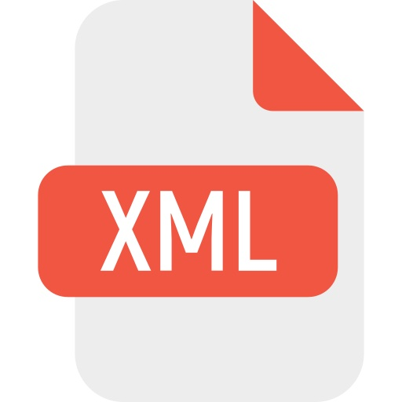

Cette édition étant un prototype, le but est d’abord de tester les différentes fonctionnalités et les différents outils pour voir s’ils répondent de manière efficace aux objectifs du projet. Les utilisateurs pourrons ainsi voir les premiers résultats de ce travail qui seront ensuite analysés pour définir les améliorations à apporter. Les données techniques que nous décrivons ici peuvent donc subir des modifications importantes en fonctions des nouveaux choix opérés.
Principes d’encodage
Assurer l’interopérabilité et la pérennisation des données sur le long terme a été une des principales règles de cette édition qui nous ont conduit à choisir des standards ouverts et largement utilisés par la communauté scientifique.
Un autre objectif était de faire figurer les différentes écritures relevées dans le manuscrit et de comparer celui-ci avec la première édition sans laisser entendre que, pour assurer la plus grande fidélité aux intentions de l’auteur, le choix éditorial s’était exprimé de quelque manière en faveur d’un élément plutôt que d’un autre (variantes de Staël vs interventions allographes ou bien manuscrit vs première édition). Il fallait donc représenter ces phénomènes de manière non hiérarchisée tout en respectant les normes d’encodage et la lisibilité.
Un autre problème a dû être affronté pour l’affichage des contenus dans la page web : les différentes écritures devaient être identifiables immédiatement et la navigation entre manuscrit et première édition devait être rapide et intuitive. Et tout ceci devait être exprimé à travers un code lisible et conforme aux recommandations sur l’accessibilité.
Ce que l’on voit actuellement dans le site web de l’édition représente ainsi le difficile compromis qui a pu être atteint pour l’instant entre ces différentes exigences.
Encodage en XML-TEI
L’encodage des textes se base sur le langage XML et les normes pour sa structuration. La personnalisation du schéma reste en tout cas conforme aux recommandations TEI, et ce pour assurer le plus haut niveau d’interopérabilité. Pour des raisons analogues, nous avons utilisé UTF-8 pour le codage des caractères, le standard ISO 8601 pour les dates, le standard ISO 639-1:2002 pour les langues et des identifiants uniques pour les personnes (ISNI, VIAF ou Wikidata), les lieux (GeoNames) et les titres d’ouvrages (Wikidata).
Nous décrivons ci-après les pratiques de balisage en rappelant que dans la page de chaque document il est possible de télécharger le fichier XML correspondant. Les fichiers disponibles sont les suivants :
Manuscrit Première édition